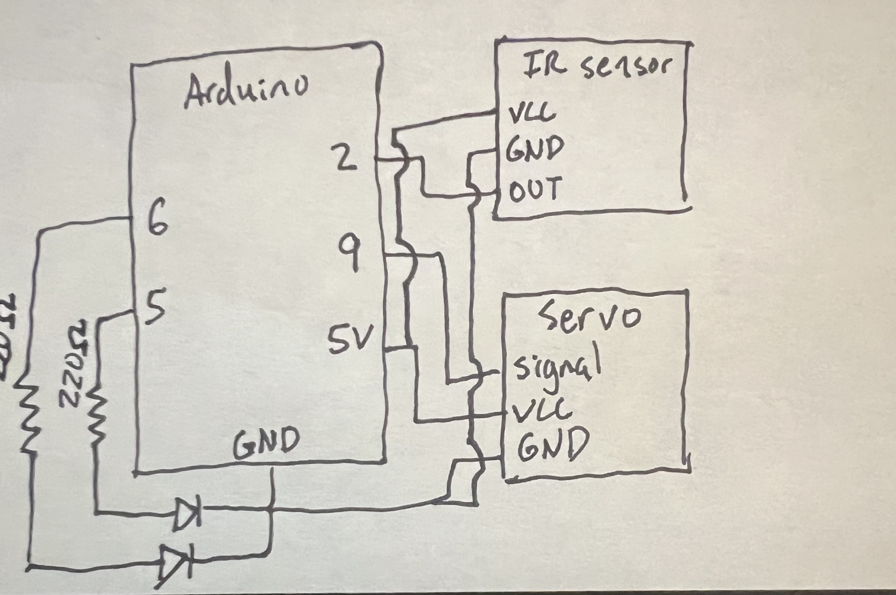
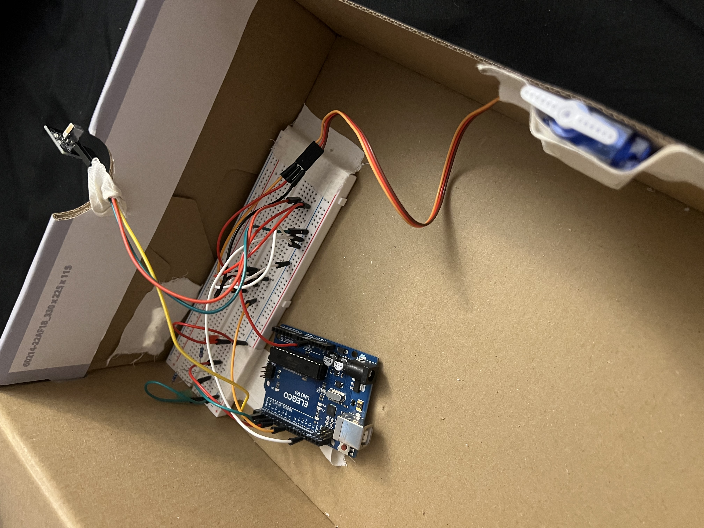
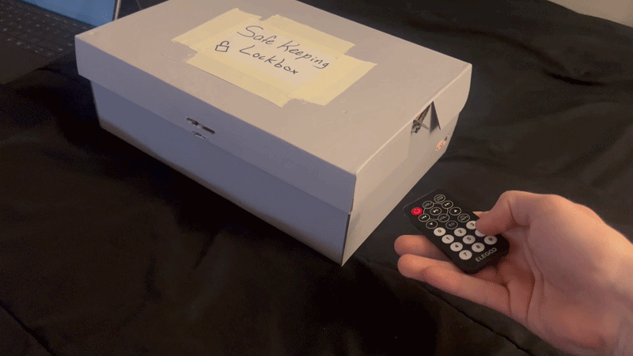
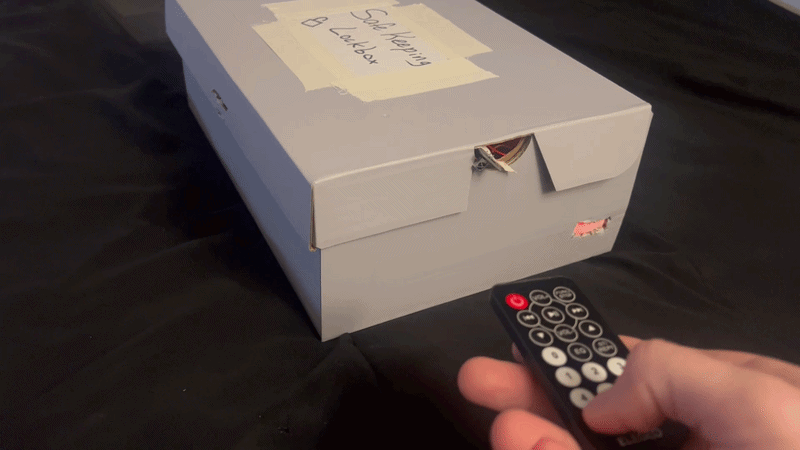

Project Title: SafeBox
Concept: SafeBox is an interactive smart lockbox that uses an infrared remote as input and a servo-driven latch as output.
The box unlocks when it receives the correct passcode sequence and locks with a dedicated remote command.
Red and green LEDs provide clear visual feedback for locked and unlocked states.
SafeBox is a physical computing product designed to secure small personal items inside a prototype lockbox. The system responds to remote control input by decoding infrared button presses, checking whether the correct sequence has been entered, and actuating a servo motor that moves the locking mechanism. The box is designed to function as a standalone embedded prototype rather than just a breadboard demonstration.
The Arduino receives button presses from the IR receiver and uses digital logic to determine whether the user has entered the correct passcode sequence. If the correct sequence is received, the Arduino commands the servo to rotate to the unlocked position, turns on the green LED, and turns off the red LED. If the dedicated lock button is received, the Arduino rotates the servo back to the locked position, turns on the red LED, and turns off the green LED. If a wrong button is entered during the passcode sequence, the sequence resets and the LEDs briefly flash to show an incorrect entry.
In the final version, the servo is powered from the laptop battery so the system can operate independently. The battery ground is connected to Arduino ground so that the servo control signal has the correct reference voltage.


The firmware uses the IRremote library to decode infrared input and the Servo library to control the locking mechanism. The final code checks for a two-button passcode to unlock the box and a separate lock command to relock it.
// Include the IRremote library so the Arduino can decode remote signals
#include <IRremote.h>
// Include the Servo library so the Arduino can control the locking servo
#include <Servo.h>
// Store the IR receiver signal pin number
const int IR_RECEIVE_PIN = 2;
// Store the green LED pin number
const int greenLedPin = 5;
// Store the red LED pin number
const int redLedPin = 6;
// Store the servo signal pin number
const int servoPin = 9;
// Create a Servo object so we can control the lock mechanism
Servo lockServo;
// Store the servo angle for the locked position
const int LOCKED_ANGLE = 0;
// Store the servo angle for the unlocked position
const int UNLOCKED_ANGLE = 110;
// Store whether the box is currently locked
bool isLocked = true;
// Store the first IR code in the 2-button unlock sequence
unsigned long code1 = 0xA55AFF00;
// Store the second IR code in the 2-button unlock sequence
unsigned long code2 = 0xBD42FF00;
// Store the IR code for the lock command
unsigned long lockCode = 0xAD52FF00;
// Store which step of the unlock sequence the user is currently on
int sequenceStep = 0;
void setup() {
// Start serial communication so we can view IR codes and status messages
Serial.begin(9600);
// Start the IR receiver on the selected pin
IrReceiver.begin(IR_RECEIVE_PIN, ENABLE_LED_FEEDBACK);
// Set the green LED pin as an output
pinMode(greenLedPin, OUTPUT);
// Set the red LED pin as an output
pinMode(redLedPin, OUTPUT);
// Attach the servo object to the servo signal pin
lockServo.attach(servoPin);
// Move the servo to the locked position at startup
lockServo.write(LOCKED_ANGLE);
// Turn on the red LED to show the box starts locked
digitalWrite(redLedPin, HIGH);
// Turn off the green LED because the box starts locked
digitalWrite(greenLedPin, LOW);
// Print a startup message to the Serial Monitor
Serial.println("SafeBox ready. Enter the 2-button sequence to unlock, or press the lock button.");
}
void loop() {
// Check whether an IR signal has been received and decoded
if (IrReceiver.decode()) {
// Read the decoded IR value from the library
unsigned long code = IrReceiver.decodedIRData.decodedRawData;
// Print the received IR code so it can be copied later
Serial.print("Received IR code: 0x");
// Print the code in hexadecimal format
Serial.println(code, HEX);
// Ignore repeat or empty IR codes so they do not break the sequence
if (code == 0x0) {
IrReceiver.resume();
return;
}
// Check whether the received code matches the lock command
if (code == lockCode) {
// Reset the unlock sequence progress
sequenceStep = 0;
// Mark the box as locked
isLocked = true;
// Move the servo to the locked position
lockServo.write(LOCKED_ANGLE);
// Turn on the red LED to show locked state
digitalWrite(redLedPin, HIGH);
// Turn off the green LED because the box is locked
digitalWrite(greenLedPin, LOW);
// Print a lock success message
Serial.println("Lock command received. SafeBox locked.");
}
// If the first code in the sequence is expected, check for it
else if (sequenceStep == 0 && code == code1) {
// Advance to the second step in the unlock sequence
sequenceStep = 1;
// Print a progress message
Serial.println("Sequence step 1 correct.");
}
// If the second code in the sequence is expected, check for it
else if (sequenceStep == 1 && code == code2) {
// Reset the sequence progress for future unlocks
sequenceStep = 0;
// Mark the box as unlocked
isLocked = false;
// Move the servo to the unlocked position
lockServo.write(UNLOCKED_ANGLE);
// Turn off the red LED because the box is no longer locked
digitalWrite(redLedPin, LOW);
// Turn on the green LED to show unlocked state
digitalWrite(greenLedPin, HIGH);
// Print an unlock success message
Serial.println("Correct 2-button sequence received. SafeBox unlocked.");
}
// If the received code is not the expected next code, treat it as incorrect
else {
// Reset the unlock sequence progress because the order was broken
sequenceStep = 0;
// Print an incorrect-entry message
Serial.println("Incorrect sequence entry. Sequence reset.");
// Flash the LEDs briefly to indicate a wrong entry
digitalWrite(redLedPin, LOW);
digitalWrite(greenLedPin, HIGH);
delay(150);
digitalWrite(greenLedPin, LOW);
digitalWrite(redLedPin, HIGH);
delay(150);
digitalWrite(redLedPin, LOW);
digitalWrite(greenLedPin, HIGH);
delay(150);
// Restore the correct LED state depending on whether the box is locked
if (isLocked) {
// Turn off the green LED in locked state
digitalWrite(greenLedPin, LOW);
// Turn on the red LED in locked state
digitalWrite(redLedPin, HIGH);
}
else {
// Turn off the red LED in unlocked state
digitalWrite(redLedPin, LOW);
// Turn on the green LED in unlocked state
digitalWrite(greenLedPin, HIGH);
}
}
// Resume listening for the next IR signal
IrReceiver.resume();
}
}The main input device in this project is the IR receiver, which detects infrared signals sent from the remote. Each remote button sends a coded signal that is decoded by the Arduino using the IRremote library. The servo motor is the primary actuator and physically rotates a latch to lock or unlock the enclosure. Two LEDs provide status feedback so the user can immediately tell whether the box is locked or unlocked.
The red and green LEDs each require a current-limiting resistor. Assuming a 5V Arduino output and an LED forward voltage of approximately 2V, a 330Ω resistor gives a current of about (5V - 2V) / 330Ω ≈ 9.1mA, which is bright and safe. The external battery is used so the servo has a more stable power source than laptop USB alone.
The project demonstrates the integration of input sensing, digital logic, physical actuation, and product prototyping into one complete interactive system.

